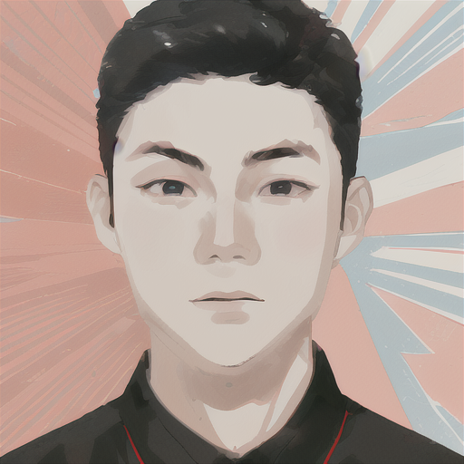

About me
I'm Yuanhe Guo, alias Ricercar, pursuing in code and tech as well as art and music.
My research interest is developing machine learning tools for professional creators' workflows.
Education
NYU Shanghai B.S.
Major: Data Science, AI Concentrate
Cumulative GPA: 3.890/4.000
High School Affiliated to Shanghai Jiaotong University, Jiading Campus
Experience
| Title | Affiliation | Time |
|---|---|---|
| Media Officer | NYU Shanghai ACM Student Chapter | |
| Leadership | NYU Shanghai AI Interest Group | |
| Research Assistant | Prof. Hongyi Wen, MAPS Lab | |
| Piano Performer | Soliloquy, A Musical Meditation through Classic Piano Repertoire - Piano Recital Featuring the Studio of Meiling Chen | |
| Marking Team Member | TedxNYU Shanghai | |
| Research Assistant | Prof. Ian Zhang, NYU Shanghai | |
| Piano Performer | End-of-Semester Piano Concert with Prof. Chen Wei | |
| English Teaching Volunteer | Stepping Stones | |
| Core Member of Marketing | NYU Shanghai Youth League |
Research Projects
Yuanhe Guo, Morui Yu, Prof. Marcela Godoy
A summer project funded by Dean's Undergraduate Research Fund (DURF)
Awarded as:
Fall 2022 Undergraduate Research Symposium Best Presentation in STEM & Media
Showcase:
A Collaboration with NYU Shanghai Reads and NYU Shanghai Performance Team

Course Projects

Yuanhe Guo, Jianing Zhang, Haotong Wu, monitored by Prof. Alfredo Canziani, Mengye Ren, Yann LeCun
[course] CSCI-GA 2572 Deep Learning, 2024 Spring

Liyuan Geng, Jinhong Xia, Yuanhe Guo, monitored by Prof. Rob Fergus
[course] CSCI-GA 2271 Computer Vision, 2023 Fall
Yuanhe Guo, Yiling Cao, monitored by Prof. Li Guo
[course] CSCI-SHU 360 Machine Learning, 2023 Spring

Academic Awards& Honors

Best Presentation in STEM&Media
Undergrad. Research Symposium, NYU Shanghai
Dean's List for Academic Year
NYU Shanghai
Competition Awards

Best Innovation Award
Digital Innovation Competition, NYU Shanghai
📢 I enjoy exploring graphic design, 3D rendering and photography in my spare time. This is a collection of my previous works
Renderings with Blender

I tried turing SVG to 3d models with glass texture.

An attempt for shading in the style of microsoft

My first attempt to render interior scene following a tutorial on youtube

My second attempt to render interior scene. This time I make an ideal room with all devices I dreamed of.

The night version of my dream room, with completely different lighting than daytime version.

Nissan Fairlady Z

An interesting work during the pandemic, when I was desperate for freedom.
Posters for TEDxNYU Shanghai

Speaker poster for TEDxNYU Shanghai november salon
TEDxNYU Shanghai februray salon
Brochure for TEDxNYU Shanghai annual conference-Front side
Brochure for TEDxNYU Shanghai annual conference-Back side
Posters for Youthleage
This is the general poster for NYU Shanghai Youthleague 'Walk the Road of Love' carnival day event. I hand-crafted all these vector illustrations in figma.

This is the poster for NYU Shanghai Youthleague 'Walk the Road of Love' monthday event.
This was the last semester for us to stay in the campus in Century Avenue. We then moved to the new NYU Shanghai campus in Qiantan. We use this as part of the topic for this year's sing-off event. Therefore, I got inspiration from airline tickets, and designed this ticket element in this poster
I further explore the idea of moving towards the new campus, and made two models for our old and new campus. I then add an explosion effect to connect the two buildings.